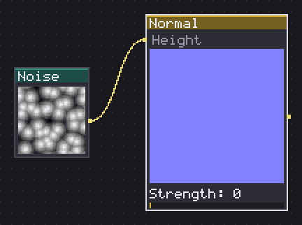
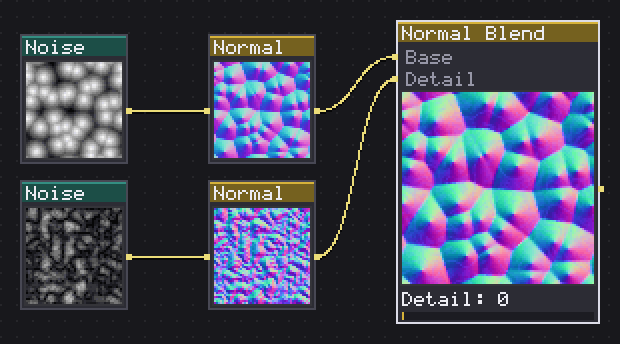
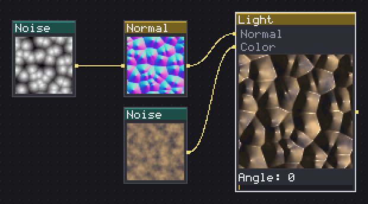
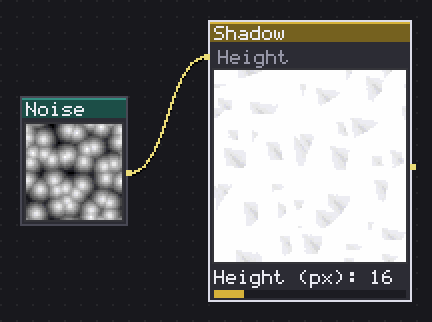
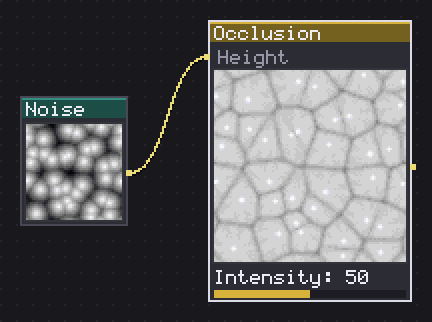
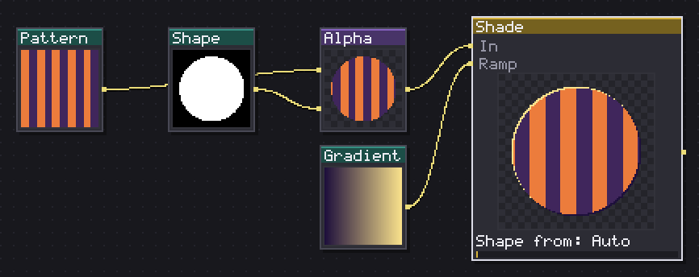
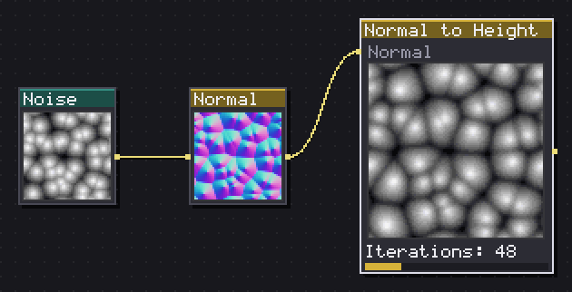
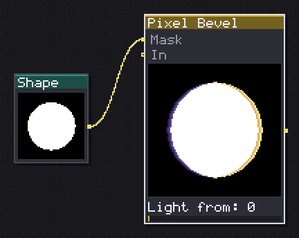

Lighting turns a flat height field or a plain silhouette into something that reads as lit. Six of these eight nodes work the classic way: a height map becomes a normal map, the normal map catches a lamp, and the same map casts a shadow or gets occluded in its own cracks. The last two, Shade and Pixel Bevel, skip the normal map step entirely and read a mask directly, painting a rim of light and dark straight onto the silhouette, closer to how a pixel artist shades a sprite by hand.
Feed the height-based nodes a grayscale bump, feed Shade and Pixel Bevel any image with a readable silhouette, alpha or otherwise, and the family sorts out the rest. Most graphs end up using both lineages on the same sprite: a baked normal map for the broad shading, a mask-based bevel for the crisp pixel-level rim on top.

Turns a grayscale height map (white = high) into the normal map Light shades.
Normal turns a grayscale height map, white read as high ground, into the tangent space normal map every other lighting node in this family expects on its Normal input. Sampling picks Sobel, the default, a 3x3 kernel that reads as smoother, or Cross, four neighbours only, cheaper and a touch sharper on fine detail.
Strength is the one slider that matters most: low values, under 20, give a nearly flat map, good for gentle rounding on a smooth stone or metal surface; past 60 the slope reads as aggressive, closer to a cut gem than a rock. Flip Y (DirectX) flips the green channel for engines that read normals the OpenGL way versus the DirectX way, so if an exported map looks lit from the wrong side in an engine, this is the first thing to try.
Seamless tiling wraps the sampling at the edges, on by default, and it should stay on for anything meant to repeat: turning it off reads the height map's own edges as a cliff, correct for a one-off prop but wrong for a floor tile.
In: Height (image) · Out: image
Parameters

Fades a Detail normal map over a Base one, or normalizes / rotates one alone.
Normal Blend combines two normal maps, or does something to one alone, depending on Mode. Whiteout is the cheap standard combine, add the XY components and renormalise, good enough for one broad base map and a fine detail layer like grain or scratches sitting on top of it. Detail reorients the detail map onto the base's own slope, more correct on a steep base but heavier to compute, worth reaching for only when Whiteout visibly slides on a steep surface.
Detail is the blend strength between the two maps, at 100 by default; drop it to fade a scratch or crack layer in without losing the base underneath. Normalize and Rotate ignore this slider entirely and work on the base alone, the first cleaning up a map that drifted off unit length after several filters, the second turning Angle into a spin of the XY components, which is how a normal mapped texture gets rotated to match a rotated albedo without re-baking the height.
Linear adds the two maps' XY directly and keeps the base's Z, the roughest of the four and the fastest, worth it when the detail layer is genuinely tiny noise and the difference from Whiteout will not show at pixel art sizes anyway.
In: Base (image), Detail (image) · Out: image
Parameters

Shades a normal map with a lamp; the Color input is the image it lights (albedo).
Light shades a normal map with one lamp; the Color input is the albedo it lights, and without one the result is a plain grayscale study of the shading itself. Type picks Directional, one angle and elevation lighting the whole texture the same way, a sun, or Point, a lamp placed at Lamp X % and Lamp Y % that falls off over Falloff %, a torch or a bulb.
Bands (0=smooth) is the slider that decides whether this reads as pixel art or as an airbrush render: at 0 the shading is a smooth gradient; set it to 3 to 6 and the diffuse term posterises into flat steps, what a hand shaded sprite actually looks like. I rarely ship a Light node with Bands left at 0.
Ambient keeps the unlit side readable instead of going pure black, and Ambient colour lets that fill lean cool or warm independently of the lamp's own Light colour. Specular with Shininess adds a small highlight on rounded surfaces, mostly worth turning on for anything wet, metallic or glassy; on matte stone or cloth it usually stays at 0.
In: Normal (image), Color (image) · Out: image
Parameters

From a height map, casts the drop shadow the lamp angle throws on lower ground.
Shadow reads a height map and casts the drop shadow the lamp throws on lower ground nearby, different from Light's shading since this is occlusion between features rather than the slope of one surface. Angle and Elevation share the same convention as Light's directional lamp, so the two usually get matching values to keep the cast shadow consistent with the surface shading.
Height (px) and Ray length (px) set how tall the features are and how far the shadow ray searches for something to fall on; a low sun, Elevation near 0, with a long Ray length (px) throws long shadows across a whole tile, a high sun with a short one keeps them tucked under each bump.
Softness blurs the shadow's edge into a penumbra instead of a hard line, proportional to Height (px), so a tall occluder gets a softer falling-off shadow than a short one at the same setting. The output is a lit/dark mask, not a colour, meant to multiply over the albedo with a Blend node: white where lit, dark inside the shadow, with Opacity scaling how deep that dark goes.
In: Height (image) · Out: image
Parameters

From a height map, darkens the crevices (ambient occlusion) that see less sky.
Occlusion darkens the crevices of a height map, the ambient occlusion that gathers in cracks and corners because they see less of the open sky than a flat plain or a peak does. It fires rays outward in Samples directions and darkens each pixel by however steep a rise it finds nearby, within Radius (px).
Radius (px) is the reach of the effect: small, 1 to 3, picks out only tight seams and mortar lines, larger, 8 and up, also shades broad shallow valleys, which starts to look like a second, softer light rather than crevice occlusion. Samples trades quality for speed, more directions catch corners a 4 or 6 sample sweep would miss, at the cost of evaluating slower on a big canvas.
Height (px) has to match whatever value built the height map's Normal or Shadow, since it decides how tall a bump reads before the ray math ever runs. Intensity scales the whole darkening. Multiply the result over the lit colour the way Shadow's output is meant to be used: I usually stack Occlusion first, then Shadow, then any specular highlight from Light, since crevices should darken before a highlight lands on top of them.
In: Height (image) · Out: image
Parameters

Brightens the edge facing the light and darkens the opposite one.
Shade brightens the edge of a shape facing the light and darkens the opposite one, working straight off a silhouette rather than off a normal map. It is the fast, mask based half of this family: no height map, no bake step, only an image and a Light from angle.
Thickness sets how many pixels deep the lit and dark bands reach in from the edge, 1 to 4; at 1 this reads as a thin pixel-art rim light, higher values thicken it into more of a graded bevel. Inner band pushes both bands further in from the very edge, the move for a shape with a thin outline of its own that should stay untouched while the shade sits just inside it.
Shape from decides what counts as the silhouette: Auto reads alpha when the image has any transparency and luminance otherwise, or force Alpha or Luminance directly when Auto guesses wrong. Wrap around lets the light and dark reach wrap across the canvas edge, worth turning on for a tile. Wire a ramp into the second input and Shade reads its lightest and darkest colours instead of the plain Light and Dark swatches, the quick way to shade into a specific palette.
In: In (image), Ramp (image) · Out: image
Parameters

Rebuilds the height that normal map would produce, by integrating it.
Normal to Height runs the opposite of the Normal node: it rebuilds the height field that would have produced a given normal map, by integrating the map's slopes back into a surface. There is one control that really matters, Iterations, because the integration is iterative, a Poisson solve, rather than a closed form.
Low iteration counts, under 50, converge to something rough, workable for a quick preview but visibly unsettled, especially in the middle of a large flat area. Past 100 the result stabilises; the default of 48 is a working compromise, and I bump it to 100 or more only when the reconstructed height still shows a visible gradient where it should be flat.
Flip Y (DirectX) has to match whatever convention the normal map was baked with, the same switch as on the Normal node itself: get it wrong and the recovered height reads inverted, hills where there should be valleys. This node exists for the case where a normal map is all you have, an imported texture, a hand painted one, and something downstream, Shadow or Occlusion, needs an actual height field to work from.
In: Normal (image) · Out: image
Parameters

Lights one edge of a mask and shadows the opposite one, a pixel at a time.
Pixel Bevel lights one edge of a mask and shadows the opposite one, a pixel at a time rather than as a smooth gradient, which is what makes it read as a pixel art bevel instead of a rendered one. Light from sets the direction, the same convention as Shade and Light.
Lit (px) sets how many rings deep the lit side reaches, and Shadow (px, 0 = lit) does the same for the dark side, defaulting to match Lit when left at 0. Inner (px) pushes both bands in from the very edge, exactly like Shade's Inner band, for leaving a hand-drawn outline untouched. Each ring is one pixel deep and rendered as its own flat tone rather than blended, and Output can hand back one ring alone, Lit ring or Dark ring, instead of the full union, which is how a thin shape like tall grass gets its blade tips picked out separately from its base.
Composite paints the rings straight onto the wired image, or onto the mask itself if nothing is wired to the second input, using Light, Light, deep ring, Dark and Dark, deep ring as the two-tone ramps on each side. Mask from and Wrap around work the same as on Shade.
In: Mask (image), In (image) · Out: image
Parameters